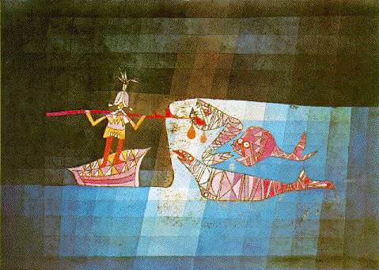
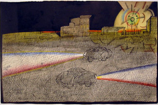
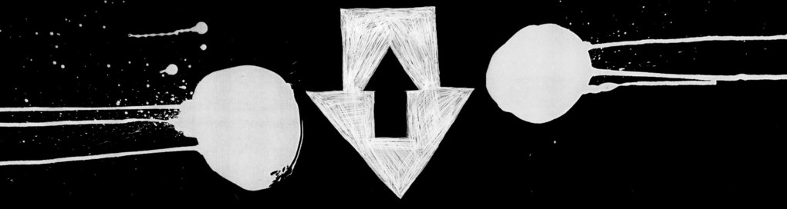
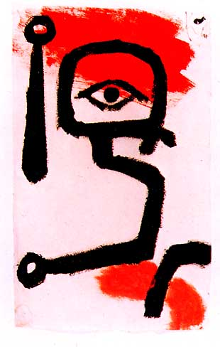
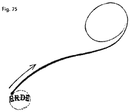
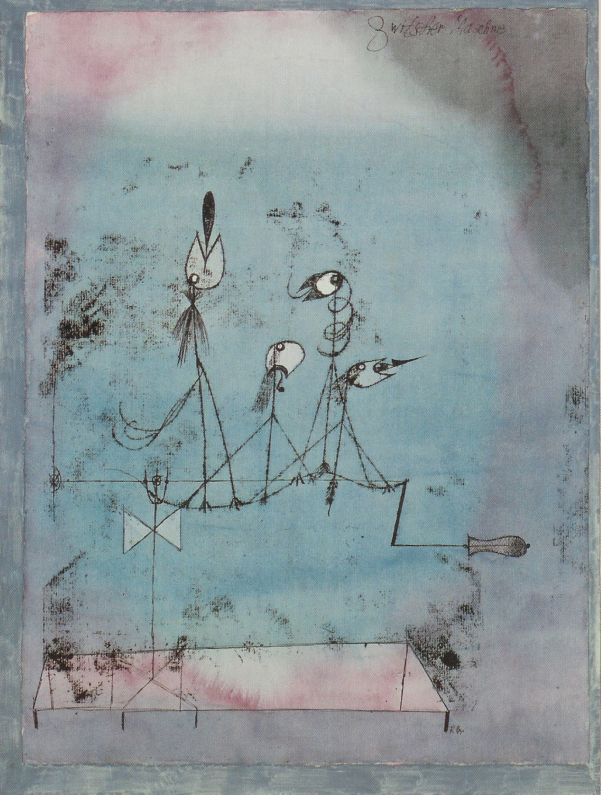
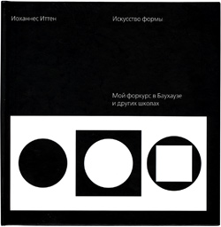
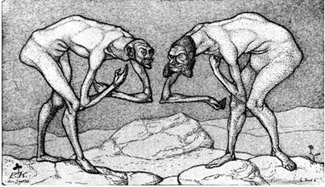
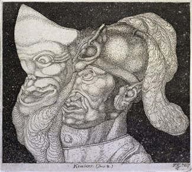

ПРО ЦВЕТ
И отчасти про Баухаус
Раз уж мы с уважаемым коллегой совпали намедни подзаголовками, я позволю себе короткую вылазку на его территорию. Издательство Д. Аронова выпустило только что пятую по счету книжку, «Педагогические Эскизы» Пауля Клее, любимейшего, а потому современнейшего из всех, извините, современных ему деятелей авангарда и обитателей Баухауза, в частности.

В наши времена, я бы сказал, нового формализма, на иллюстраторском олимпе немало собралось тех, кто перед его обаянием не устоял В том числе и, как я уже говорил, через посредство Саула Стейнберга —

— а чаще непосредственно. Stanley Donwood, например, замечательный в своем роде художник, посвятивший жизнь рисованию обложек для группы Радиохед.

Покупать книгу скорее всего необходимо (кое-где уже есть), хотя на первый взгляд вещь довольно невменяемая. Честно говоря, прочитать ее я не успел, а может быть, и не стану. Вообще, читать записки художника, от которого осталось такое количество полотен, мне кажется делом полностью бессмысленным — равно как чтение биографий.

Но мне вдобавок сдается, что Клее, как вроде бы свойственно немцам, пытается разъять, упихнуть в схемы эмоциональную составляющую изобразительного искусства.

Весьма вероятно, что от схем этих мало толку без самого Клее, размахивающего руками перед носом ученика. Образно говоря, исчерпывающие знания об устройстве двигателя внутреннего сгорания и полный бак бензина — это две большие разницы. Но что-то полезное там найдется наверняка.

Хотя ранее вышедшие у Д.Аронова книги Йоханнеса Иттена точно полезнее, в особенности та, что про форму.

Очень хорошо она открывает вид на разливанное море возможностей графики. Если кто еще не, рекомендую настоятельно.

Та, что про цвет, много более механическая, а вдобавок есть у меня подозрение, что устарела.
Казалось бы, что может быть вечнее теории дополнительных цветов — но ведь и ее до какого-то момента не существовало, а какие-нибудь голландцы так и остались в смысле цвета непревзойденны. В нашем случае цветовое колесо катится в тартарары при одном упоминании корпоративного цвета.
Цвет прописывается в ТЗ: арт-директор хочет «пятно». Пиджак должен быть желто-черный, и хоть ты дерись. Тут уже не до рефлексов, так сказать. То есть я, конечно, опять передергиваю; понятно, что розовые тона на какой-нибудь девичьей иллюстрации станут только розовее, если добавить к ним зеленого (или какого там?)- но тут уже заказчик запросто может попросить это дело убрать.
Я уже не говорю о том, что рисовать приходится так, чтобы ни одна типография (сам-то я привычный к хорошему, но вот намедни получил письмо из типографии: просят «законтрастить» детали, потому, что (дословно) «незначительные оттенки не будут воспроизведены точно». Не будут, понимаете? Там было еще хуже, но не стану изливать тут свои горести) не смогла испортить. Больше грязи — больше связи, вот именно. Надо думать, как раз поэтому нынче в моде все тухленькое, пригашенное, буро-болотное, из которого лишь изредка блеснет, как брильянт, чистая маджента. Не всегда и черного с белым увидишь.

P. S. Из аннотации к «Педагогическим Эскизам»: «…первая из трех самых значительных книг знаменитой серии „Книги Баухауса“…, за которой последовали „Точка и линия на плоскости“ Кандинского и „Беспредметный Мир“ Малевича».
Ждем, стало быть.